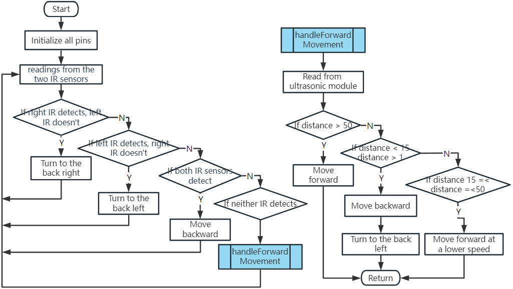
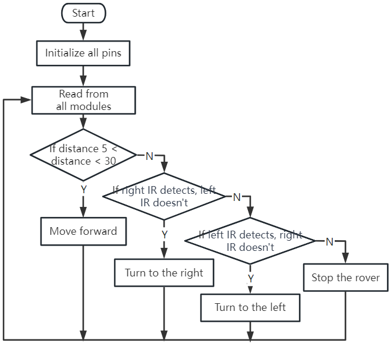

Note
Hello, welcome to the SunFounder Raspberry Pi & Arduino & ESP32 Enthusiasts Community on Facebook! Dive deeper into Raspberry Pi, Arduino, and ESP32 with fellow enthusiasts.
Why Join?
Expert Support: Solve post-sale issues and technical challenges with help from our community and team.
Learn & Share: Exchange tips and tutorials to enhance your skills.
Exclusive Previews: Get early access to new product announcements and sneak peeks.
Special Discounts: Enjoy exclusive discounts on our newest products.
Festive Promotions and Giveaways: Take part in giveaways and holiday promotions.
👉 Ready to explore and create with us? Click [here] and join today!
Lesson 8: Advanced Obstacle Avoidance and Intelligent Following System
In today’s lesson, we’re going to push our STEAM skills a step further. We’ll combine an obstacle avoidance module with an ultrasonic sensor to create an advanced obstacle avoidance system. We’ll also implement an intelligent following system to our Rover.
By the end of this lesson, our Mars Rover will not only be able to avoid obstacles in its path but also follow moving objects. Imagine having a mini robotic pet following you around! Exciting, isn’t it? So let’s get started.
Note
If you are learning this course after fully assembling the GalaxyRVR, you need to move this switch to the right before uploading the code.

Course Objectives
Learn how to combine obstacle avoidance modules with an ultrasonic module for improved navigation.
Understand the principles and functionalities behind an advanced obstacle avoidance system.
Learn how to implement an intelligent following system in the Mars Rover.
Course Materials
Mars Rover model (the one we built in previous lessons)
USB Cable
Arduino IDE
Computer
And of course, your creative mind!
Course Steps
Step 1: Understanding the Concept
The obstacle avoidance module, as the name suggests, helps our Rover avoid obstacles. It detects obstacles by transmitting an infrared signal and then receiving the signal reflected back from the object. If there is an obstacle in front of the module, the infrared signal is reflected back, and the module detects it.
Now, adding an ultrasonic sensor to the mix improves this system. Ultrasonic sensors measure distance by sending out a sound wave at a specific frequency and listening for that sound wave to bounce back. By recording the elapsed time between the sound wave being generated and the sound wave bouncing back, it is possible to calculate the distance between the sensor and the object.
Combining these two gives us a reliable, efficient, and versatile obstacle avoidance system!
Step 2: Constructing Advanced Obstacle Avoidance Systems
In our previous lessons, we’ve learned the basics of obstacle avoidance using infrared sensors. We’ve also explored how an ultrasonic module works. Now, we are going to bring all these pieces together and build an advanced obstacle avoidance system!
Our enhanced Mars Rover will now use both ultrasonic and infrared sensors to navigate its surroundings.
Let’s envision how the infrared and ultrasonic modules should work together. To help clarify our logic, let’s use a flowchart. Learning how to create flowcharts is an invaluable step in our coding journey as it can help you clarify your thoughts and systematically outline your plan.
{kind=link}

Now let’s turn this flowchart into actual code to bring our Rover to life.
Note that the handleForwardMovement() function is where we’ve integrated the behavior of the ultrasonic sensor. We read the distance data from the sensor and based on this data, we decide the movement of the Rover.
After uploading the code to your R3 board, it’s time to test the system. Make sure the Rover can detect and avoid obstacles efficiently. Remember, you may need to adjust the detection distance in the code based on your actual environment to perfect the system.
Step 3: Coding the Intelligent Following System
With our Rover now capable of avoiding obstacles, let’s enhance it further by making it follow objects. Our goal is to modify our existing code to make the Rover move towards a moving object.
Ever wondered about the differences between a following system and an obstacle avoidance system?
The key here is that in a following system, we want our Rover to move in response to detected objects, while in an obstacle avoidance system, we’re looking to steer clear of detected objects.
Let’s visualize the desired workflow:

If the ultrasonic sensor detects an object within 5-30 cm, our Rover should move towards it.
If the left IR sensor detects an object, our Rover should take a left turn.
If the right IR sensor detects an object, our Rover should take a right turn.
In all other cases, our Rover should remain stationary.
Now, it’s time for us to complete the code.
Once the code is completed, test if the Rover follows your movements.
As we did with the obstacle avoidance system, it will be crucial to test our following system and troubleshoot any issues that may arise. Ready to start?
Step 4: Summary and Reflection
Today, you’ve accomplished something amazing. You combined different modules and concepts to create an advanced obstacle avoidance and following system for your Mars Rover. Remember, learning does not end here - keep exploring, innovating, and applying your newfound skills to other projects.
Remember to always reflect on your learning process. Think about the following:
Why do you think we prioritized the obstacle avoidance module before the ultrasonic sensor in our obstacle avoidance system, and vice versa in the following system?
How would the outcome differ if we were to swap the order in which these modules are checked in the code?
Challenges and problems are an integral part of the STEAM learning process, offering valuable opportunities for improvement. Don’t shy away from troubleshooting - it’s a powerful learning tool in itself!
As you continue on your journey, know that every obstacle you overcome brings you one step closer to mastering your STEAM skills. Keep going and enjoy the journey!